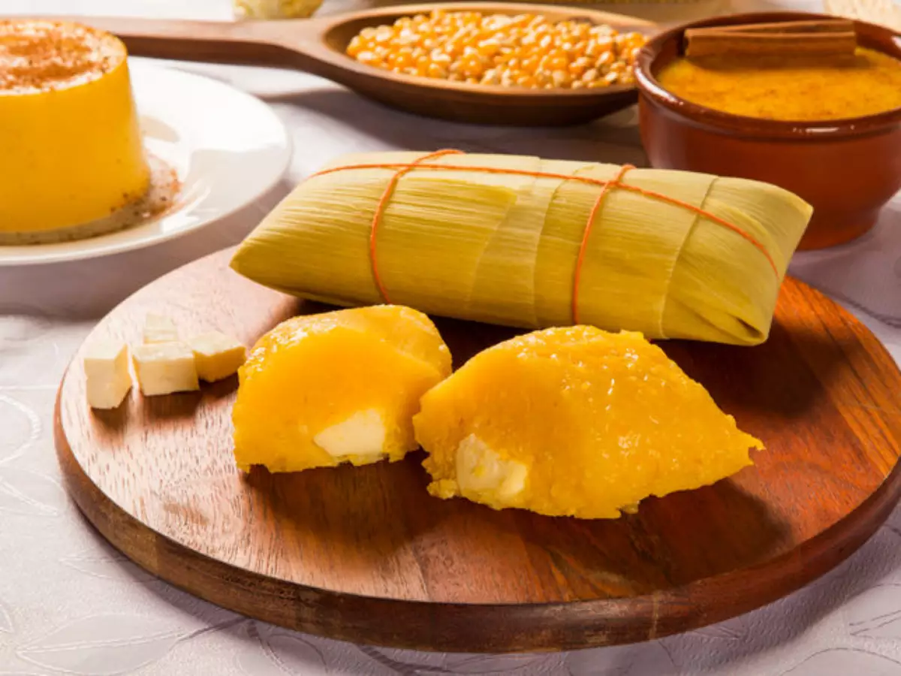

Doce de Abóbora
Doce tradicional feito com abóbora e coco ralado, comum nas festas juninas brasileiras.

Doce de Leite
Preparado com leite e açúcar, é um doce cremoso muito popular em toda a América Latina.

Pão de Queijo
Bolinhas assadas feitas com polvilho e queijo, típicas da culinária mineira.

Pamonha
Feita com milho verde ralado e cozido, pode ser doce ou salgada e é embrulhada na palha do milho.

Galinhada
Prato rústico com arroz e frango caipira, muito consumido no interior do Brasil.

Quentão
Bebida quente feita com cachaça, gengibre e especiarias, típica de festas juninas.

Polenta
Prato típico do interior, feito com fubá e servido com molho ou queijo.

Barreado
Prato tradicional do Paraná, feito com carne cozida por várias horas em panela de barro.